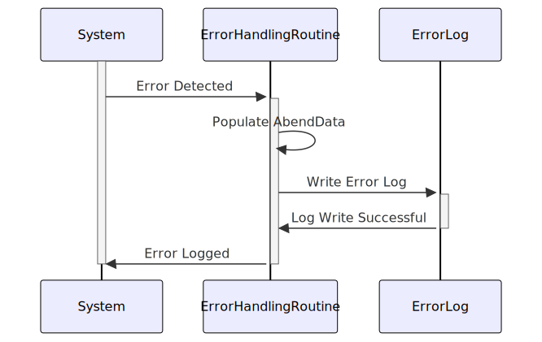

Gerado em: 1 de outubro de 2024
Título do Documento: Especificação de Registro de Erros do Sistema de Cartões
Descrição Resumida:
Este documento descreve a estrutura e função de um componente crítico dentro do Sistema de Cartões, focando especificamente em como o sistema lida e registra erros que ocorrem durante o processamento. Este componente não executa nenhuma lógica de negócios em si, mas atua como um mecanismo padronizado de registro de erros, garantindo que quaisquer problemas inesperados sejam devidamente documentados para análise e resolução.
Histórias de Usuário:
Como administrador do sistema, preciso de uma maneira confiável de rastrear e entender os erros que ocorrem durante o processamento do cartão de crédito para que eu possa resolver problemas rapidamente e manter a estabilidade do sistema.
Épico Relacionado: 9 - Utilitários do Sistema
Requisitos Técnicos:
- Estrutura de Dados de Registro de Erros:
- O sistema deve fornecer uma estrutura de dados padronizada para armazenar informações de erro.
- A estrutura de dados deve incluir os seguintes campos:
ABEND-CODE (String(4)): Um código de 4 caracteres representando o tipo específico de erro.ABEND-CULPRIT (String(8)): Um campo de 8 caracteres para armazenar o nome do programa ou componente onde o erro ocorreu.ABEND-REASON (String(50)): Um campo de 50 caracteres para uma explicação mais detalhada da causa do erro.ABEND-MSG (String(72)): Um campo de 72 caracteres para uma mensagem geral associada ao erro.
- Rotina de Tratamento de Erros:
- O sistema deve ter uma rotina ou mecanismo dedicado para lidar com erros.
- Quando um erro for detectado, o sistema deve invocar a rotina de tratamento de erros.
- A rotina de tratamento de erros deve preencher a estrutura de dados de registro de erros com informações relevantes.
- A rotina de tratamento de erros deve gravar o log de erros em um destino de saída designado.
- Padronização do Código de Erro:
- O sistema deve usar um conjunto predefinido de códigos de erro.
- Cada código de erro deve ter uma definição clara e concisa.
- As definições do código de erro devem ser documentadas em um local centralizado.
Modelos Relacionados:
- AbendData:
abendCode: String(4) - Representa o tipo de erro encontrado.abendCulprit: String(8) - Identifica o programa ou componente de onde o erro se originou.abendReason: String(50) - Fornece uma explicação detalhada da causa do erro.abendMsg: String(72) - Uma mensagem geral sobre o erro para fins de registro ou exibição.
Configurações:
- Destino de Saída do Log de Erros: O sistema deve ser configurável para determinar onde os logs de erros são gravados (por exemplo, um arquivo, tabela de banco de dados ou log de eventos).
- Definições de Código de Erro: O sistema deve permitir a definição e manutenção de códigos de erro e suas descrições correspondentes.
Melhorias de Código:
- Tratamento de Erros Centralizado: Implemente um mecanismo centralizado de tratamento de erros para garantir consistência e capacidade de manutenção.
- Registro Estruturado: Use uma estrutura de registro estruturada para melhorar a legibilidade e a capacidade de análise dos logs de erros.
- Notificações Automatizadas de Erros: Configure alertas automatizados para erros críticos para permitir monitoramento proativo e tempos de resposta mais rápidos.
- Documentação do Código de Erro: Mantenha uma documentação abrangente para todos os códigos de erro, incluindo suas causas, sintomas e ações recomendadas.
Melhorias de Segurança:
- Armazenamento Seguro de Logs: Garanta que os logs de erros sejam armazenados com segurança para evitar acesso, modificação ou exclusão não autorizados.
- Verificação de Integridade do Log: Implemente mecanismos para verificar a integridade dos logs de erros e detectar qualquer tentativa de adulteração.
- Controle de Acesso: Restrinja o acesso aos logs de erros apenas ao pessoal autorizado.
Diagrama Conceitual:

–Made by “Smart Engineering” (by Compass.UOL)–